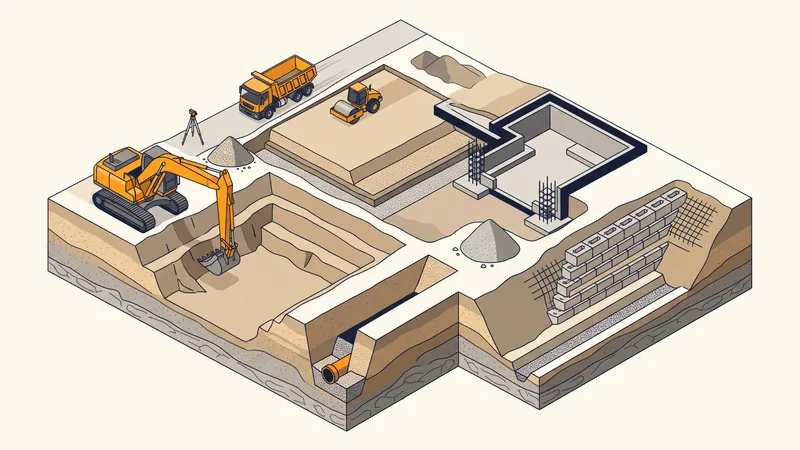

Lexique du terrassement : 45 termes de chantier expliqués
Un devis de terrassement parle de déblai, de foisonnement, de GNT ou de BRH sans toujours les expliquer. Ce lexique définit les 45 termes que nos clients rencontrent le plus souvent, avec pour chacun le renvoi vers le guide ou la prestation concernée. Les définitions sont celles utilisées sur nos chantiers d'Aix-en-Provence, de Marseille et de toute la région, et les prix cités renvoient à la grille des tarifs 2026.


Sommaire alphabétique
- Argile
- Assainissement
- Banquette
- Brise-roche hydraulique (BRH)
- Calcaire
- Compactage
- Cubage
- Cuvelage
- Déblai
- Décaissement
- Décapage
- Drainage
- Eaux pluviales
- Enrobé
- Enrochement
- Étude de sol G1 / G2
- Excavation
- Foisonnement
- Fond de forme
- Fondation
- Fosse toutes eaux
- Gabion
- Géotextile
- Grave non traitée (GNT)
- Marne
- Merlon
- Mini-pelle
- Mur de soutènement
- Nivellement
- Pelle hydraulique
- Pieux
- Plaque vibrante
- Puits perdu
- Purge
- Radier
- Remblai
- Semelle de fondation
- Talus
- Terre végétale
- Tout-à-l'égout
- Tractopelle
- Tranchée
- Viabilisation
- Vide sanitaire
- VRD (voirie et réseaux divers)
Termes de A à D
Argile
Sol fin qui gonfle avec l'eau et se rétracte en séchant. Ce retrait-gonflement fissure les maisons mal fondées : sur argile, l'étude de sol G2 impose souvent des fondations plus profondes ou un vide sanitaire. Les argiles sont fréquentes dans le bassin de Gardanne et sur les plaines de l'Arc. Définition Wikipédia
Assainissement
Ensemble des ouvrages qui collectent et traitent les eaux usées d'un bâtiment. Il est collectif quand la maison se raccorde au réseau public (tout-à-l'égout) et non collectif (ANC) quand elle traite ses eaux sur la parcelle avec une fosse toutes eaux ou une micro-station. Le terrassier creuse les tranchées et pose les canalisations, voir nos travaux de VRD et d'assainissement. Définition Wikipédia
Banquette
Palier horizontal aménagé dans un talus ou une fouille profonde pour stabiliser la pente et permettre la circulation des engins. Sur un terrain en forte pente, les banquettes successives remplacent un mur de soutènement unique, comme expliqué dans notre guide du terrassement en pente.
Brise-roche hydraulique (BRH)
Marteau piqueur de grande puissance monté sur une pelle mécanique à la place du godet. Il fragmente le calcaire ou le béton par percussion. Son emploi double ou triple le prix du m³ excavé, sujet détaillé dans notre article sur le prix du terrassement en sol rocheux.
Calcaire
Roche sédimentaire dominante en Provence, du massif de l'Étoile aux contreforts de la Sainte-Victoire. Compact et massif, il se terrasse au brise-roche ; altéré et fissuré, il se ripe à la dent de pelle. Sa dureté réelle ne se connaît qu'après un sondage, d'où la visite préalable avant tout devis. Définition Wikipédia
Compactage
Densification mécanique d'un remblai par couches successives de 20 à 30 cm, à la plaque vibrante ou au rouleau. Un remblai non compacté tasse pendant des années et fissure dalles et enrobés. Les tarifs par matériau figurent dans le guide du prix du remblai. Définition Wikipédia
Cubage
Calcul du volume de terre à déplacer, exprimé en m³ en place. C'est la base de tout devis de terrassement. La méthode (surface x profondeur moyenne, coefficient de foisonnement) est expliquée pas à pas dans comment calculer un volume de terrassement.
Cuvelage
Étanchéité continue d'un sous-sol enterré, réalisée en béton hydrofuge ou par revêtement, pour résister à la pression de l'eau du sol. Indispensable quand la nappe est proche, il s'anticipe dès le terrassement du sous-sol. Définition Wikipédia
Déblai
Terre ou roche extraite lors d'une fouille. Le déblai est soit réutilisé sur place en remblai, soit évacué en décharge d'inertes. Sa qualité (terre végétale, tout-venant, blocs rocheux) décide de ce qu'il peut redevenir. Prix au m³ dans le guide du prix du terrassement.
Décaissement
Abaissement du niveau d'un terrain sur une épaisseur définie, par exemple 30 cm sous une future allée ou 1 m pour créer une plateforme. Se chiffre au m³ ou au m² selon l'épaisseur, voir le guide du nivellement de terrain.
Décapage
Retrait de la couche superficielle de terre végétale (15 à 30 cm) avant toute construction, car elle est compressible et riche en matière organique. La terre décapée est stockée en cordon pour les futurs espaces verts. Voir le prix du décapage de terre végétale.
Drainage
Dispositif qui capte et évacue l'eau du sol pour protéger fondations, murs enterrés et plateformes : drain périphérique en tuyau perforé, tranchée drainante, massif de graviers. Techniques et prix dans le guide du drainage de terrain. Définition Wikipédia
Termes de E à G
Eaux pluviales
Eaux de pluie recueillies par les toitures et surfaces imperméables. La réglementation impose le plus souvent de les gérer sur la parcelle (puits perdu, cuve, infiltration) plutôt que de les rejeter à l'égout. Règles et solutions dans notre guide de la gestion des eaux pluviales. Définition Wikipédia
Enrobé
Mélange de graviers et de bitume, posé à chaud (durable) ou à froid (réparations). C'est le revêtement standard des allées et parkings. Comptez 25 à 60 €/m² posé selon notre guide du prix de l'enrobé au m². Définition Wikipédia
Enrochement
Empilement de blocs rocheux de 300 kg à plusieurs tonnes pour retenir un talus ou décorer un jardin. Réalisé à la pelle avec un grappin ou une pince, il utilise volontiers le calcaire local. Détails dans le guide de l'enrochement paysager. Définition Wikipédia
Étude de sol G1 / G2
Mission géotechnique qui caractérise le sol avant construction. La G1 (préalable) est obligatoire à la vente d'un terrain en zone argileuse, la G2 (conception) dimensionne les fondations. Obligations et tarifs dans notre guide de l'étude de sol G1 G2.
Excavation
Creusement d'un volume de sol pour recevoir fondations, piscine, sous-sol ou réseaux. Le terme désigne l'opération, la fouille désigne le trou obtenu. Toutes nos prestations sont décrites sur la page terrassement. Définition Wikipédia
Foisonnement
Augmentation de volume de la terre une fois extraite : 1 m³ en place occupe 1,2 à 1,4 m³ dans un camion (jusqu'à 1,7 pour la roche). Oublier le foisonnement fausse le nombre de rotations de camions et donc le coût d'évacuation.
Fond de forme
Surface du sol préparée, réglée et compactée qui reçoit les couches d'une chaussée ou d'une dalle. Sa qualité conditionne la tenue de l'enrobé ou des pavés : voir le guide de l'épaisseur d'enrobé pour une allée.
Fondation
Partie enterrée qui transmet les charges d'un bâtiment au sol : semelles filantes sous les murs, semelles isolées sous les poteaux, radier général ou pieux en sol médiocre. Prix par type dans le guide du prix des fondations de maison. Définition Wikipédia
Fosse toutes eaux
Cuve enterrée de prétraitement des eaux usées d'une maison non raccordée au tout-à-l'égout, suivie d'un épandage ou d'un filtre. Elle remplace l'ancienne fosse septique qui ne recevait que les eaux-vannes. Comparatif dans fosse septique ou tout-à-l'égout. Définition Wikipédia
Gabion
Cage en grillage d'acier remplie de pierres, empilée pour former un mur de soutènement drainant et esthétique. Solution intermédiaire entre l'enrochement et le béton, décrite dans notre guide du mur de soutènement. Définition Wikipédia
Géotextile
Feutre synthétique déroulé entre le sol et un remblai ou un gravier pour empêcher les matériaux de se mélanger tout en laissant passer l'eau. Indispensable sous une cour en gravier, voir le guide du prix d'une cour en gravier. Définition Wikipédia
Grave non traitée (GNT)
Mélange de graviers et de sable concassés (0/31,5 ou 0/80) utilisé en couche de fondation sous les chaussées, dalles et allées. Elle se compacte fortement et remplace avantageusement la terre en remblai porteur. Prix au m³ dans le guide du remblai. Définition Wikipédia
Termes de M à P
Marne
Roche tendre mêlant argile et calcaire, très présente dans le pays d'Aix. Facile à terrasser, elle devient glissante et instable quand elle se gorge d'eau : les talus en marne demandent un drainage soigné et une pente adoucie. Définition Wikipédia
Merlon
Butte de terre allongée, constituée de déblais, qui sert de protection visuelle, acoustique ou de stockage temporaire. Modeler un merlon coûte moins cher qu'évacuer la terre, à condition d'avoir la place sur la parcelle.
Mini-pelle
Pelle hydraulique de 0,8 à 8 t, capable de passer par un portail de jardin. Elle réalise tranchées, petites fouilles et piscines en terrain accessible. Prix de location nue ou avec chauffeur dans le guide de la location de mini-pelle. Définition Wikipédia
Mur de soutènement
Ouvrage qui retient les terres d'un talus pour créer une plateforme : enrochement, gabions, parpaings armés ou béton banché. Il doit être drainé et dimensionné pour la poussée des terres, voir notre guide du mur de soutènement. Définition Wikipédia
Nivellement
Mise à niveau d'un terrain selon une pente ou une altitude donnée, contrôlée au laser rotatif ou au GPS de chantier. Un nivellement simple coûte 3 à 8 €/m² selon notre guide du prix du nivellement. Définition Wikipédia
Pelle hydraulique
Engin de terrassement à chenilles ou à pneus, équipé d'un bras et d'un godet interchangeable (BRH, grappin, tiltrotator). De 8 à 25 t, elle assure les gros volumes. Notre parc est présenté sur la page location de matériel. Définition Wikipédia
Pieux
Fondations profondes en béton forées ou battues jusqu'à une couche porteuse, quand le sol de surface ne porte pas. Plus coûteux que les semelles, ils s'imposent en remblai ancien ou en argile épaisse. Comparatif dans le guide des fondations de maison. Définition Wikipédia
Plaque vibrante
Compacteur manuel utilisé pour le lit de pose des pavés, les fonds de tranchée et les petits remblais. Elle complète le rouleau sur les surfaces réduites, comme lors de la pose de pavés autobloquants. Définition Wikipédia
Puits perdu
Ouvrage vertical rempli de galets ou busé, qui infiltre les eaux pluviales dans le sol. Il ne convient qu'aux sols perméables et se dimensionne selon la surface de toiture. Prix et règles dans le guide du prix d'un puits perdu. Définition Wikipédia
Purge
Extraction localisée d'une poche de sol médiocre (vase, remblai, argile molle) remplacée par un matériau sain compacté. La purge évite un tassement différentiel sous une dalle ou une chaussée.
Termes de R à V
Radier
Dalle de béton armé épaisse qui sert de fondation à tout le bâtiment en répartissant les charges sur une grande surface. Solution courante sur sol moyen ou pour les piscines. Prix au m² dans le guide des fondations. Définition Wikipédia
Remblai
Matériau rapporté et compacté pour combler une fouille, rehausser un terrain ou créer une plateforme : terre saine, tout-venant, GNT ou déblais réutilisés. Prix fourni-livré dans le guide du prix du remblai. Définition Wikipédia
Semelle de fondation
Base élargie en béton armé coulée sous un mur (semelle filante) ou un poteau (semelle isolée), à une profondeur hors gel d'au moins 50 cm en Provence. Comptez 100 à 200 €/ml selon notre guide des fondations. Définition Wikipédia
Talus
Pente de terrain naturelle ou façonnée par le terrassement. Sa stabilité dépend du sol : un talus en marne ne tient pas la pente d'un talus en calcaire. Techniques dans le guide du terrassement en pente. Définition Wikipédia
Terre végétale
Couche superficielle fertile du sol, décapée avant construction et remise en place pour les jardins. Elle ne doit jamais servir de remblai sous un ouvrage car elle se tasse. Prix du décapage dans le guide dédié à la terre végétale. Définition Wikipédia
Tout-à-l'égout
Réseau public d'assainissement collectif. Le raccordement est obligatoire dans les deux ans quand le réseau passe devant la parcelle. Budget complet (taxe, tranchée, regard) dans le guide du prix du raccordement au tout-à-l'égout. Définition Wikipédia
Tractopelle
Engin polyvalent à pneus qui combine un godet chargeur à l'avant et une pelle rétro à l'arrière. Idéal pour les tranchées et le chargement de camions sur les chantiers de taille moyenne. Tarifs dans le guide du prix de location d'un tractopelle. Définition Wikipédia
Tranchée
Fouille étroite et longue destinée à recevoir un réseau (eau, électricité, assainissement, fibre). Sa profondeur est réglementée par réseau, son prix se calcule au mètre linéaire, voir le guide du prix d'une tranchée au ml.
Viabilisation
Raccordement d'un terrain aux réseaux publics (eau, électricité, assainissement, télécom) et création de l'accès. Elle conditionne le permis de construire. Étapes et coûts dans le guide de la viabilisation d'un terrain constructible. Définition Wikipédia
Vide sanitaire
Espace ventilé de 20 à 80 cm entre le sol et le plancher bas d'une maison, qui isole de l'humidité et absorbe les mouvements d'un sol argileux. Comparé à la dalle sur terre-plein dans notre guide vide sanitaire ou dalle. Définition Wikipédia
VRD (voirie et réseaux divers)
Ensemble des travaux d'accès et de réseaux d'un terrain : voirie, tranchées, canalisations, regards, assainissement, eaux pluviales. C'est le cœur de métier de STP Terrassement après le terrassement, voir la page VRD et assainissement. Définition Wikipédia
Questions fréquentes sur le vocabulaire du terrassement
Quelle est la différence entre déblai et remblai ?
Le déblai est la terre que l'on retire, le remblai est le matériau que l'on rapporte et compacte. Un bon terrassement cherche l'équilibre déblai-remblai sur la parcelle pour limiter les rotations de camions, ce qui fait baisser le devis.
Que signifie GNT 0/31,5 sur un devis ?
Grave non traitée dont les grains vont de 0 à 31,5 mm. C'est la couche de fondation classique sous une allée en enrobé ou une dalle. Le 0/80, plus grossier, sert aux remblais épais et aux plateformes.
Pourquoi le devis mentionne-t-il un prix différent pour la roche ?
Parce que le calcaire compact exige un brise-roche hydraulique, dont le rendement est trois à cinq fois plus faible que celui d'un godet en terre meuble. Le terrassier prévoit donc une ligne séparée, souvent déclenchée seulement si la roche est rencontrée.
Pour aller plus loin
- Tarifs terrassement 2026 : la grille de prix complète, poste par poste.
- Comment choisir un terrassier : les 10 critères pour comparer des devis.
- Calculer un volume de terrassement : cubage, foisonnement, exemples.
- Tous nos guides techniques mis à jour en 2026.